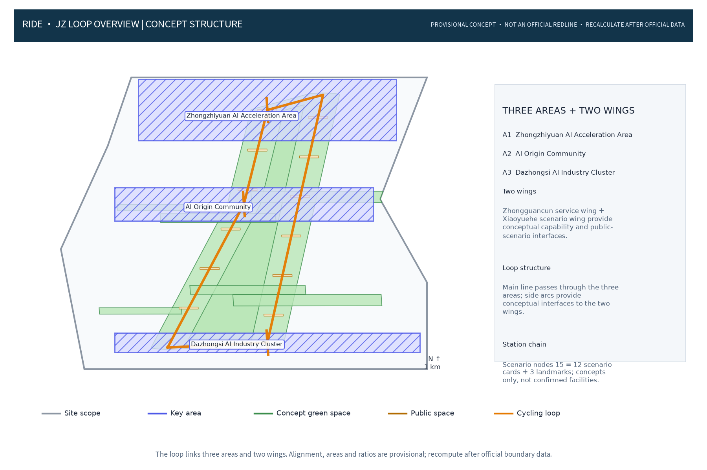
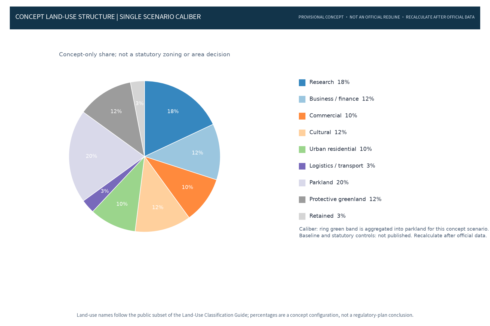
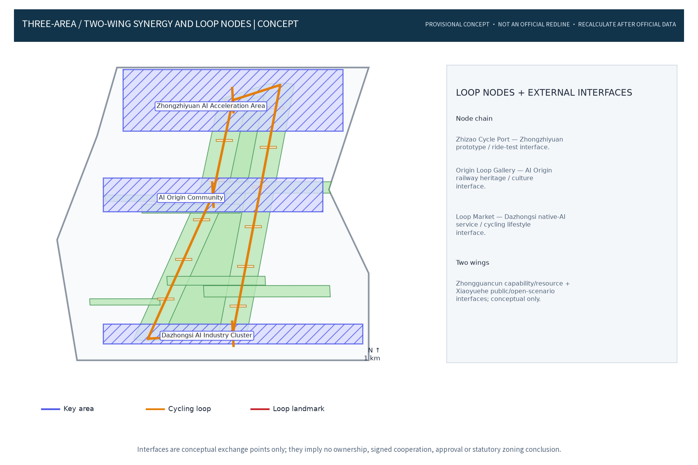
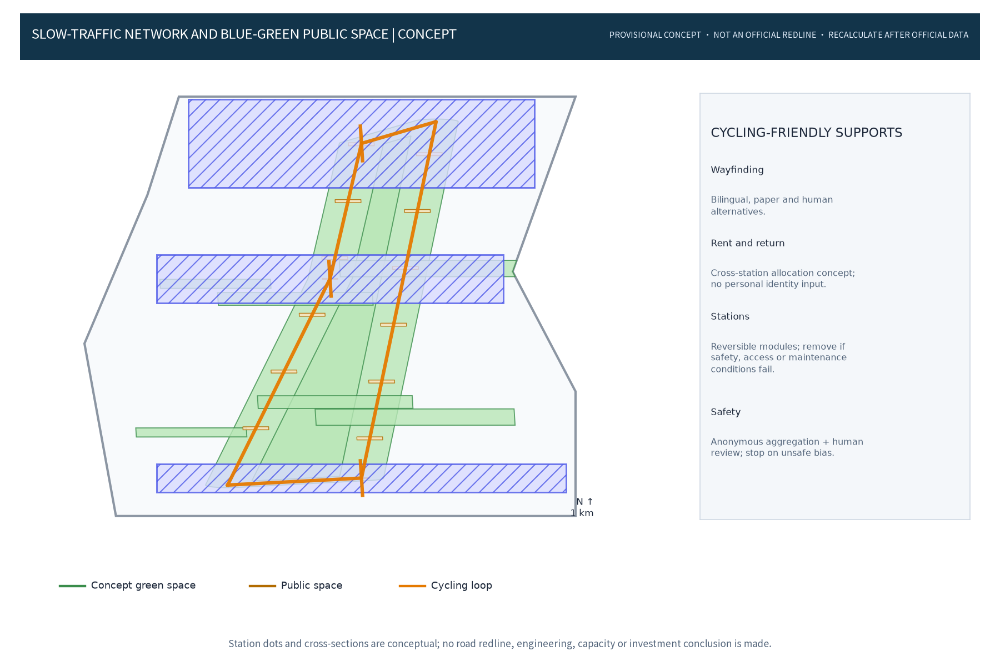
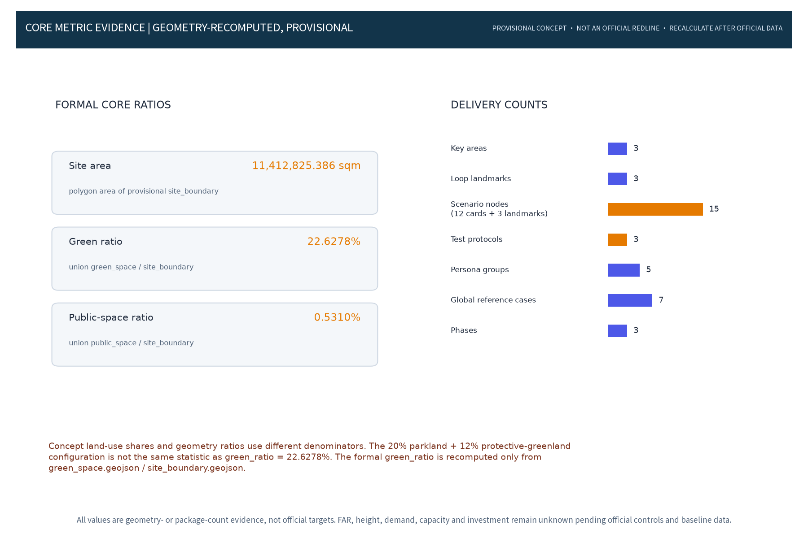

Core metrics
site_area_sqm11412825.386green_ratio0.226278public_space_ratio0.00531Scenario nodes (12 cards + 3 landmarks)15Figures





Repair evidence
Regional interfaces, proposed-but-not-run test protocols, S01–S12 data lifecycles, node cards and agent.2/agent.6 conversion pathways are registered in repair_evidence.json.